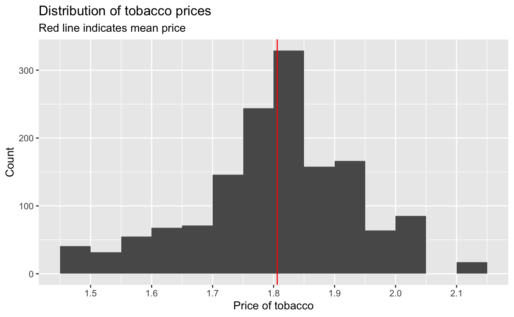
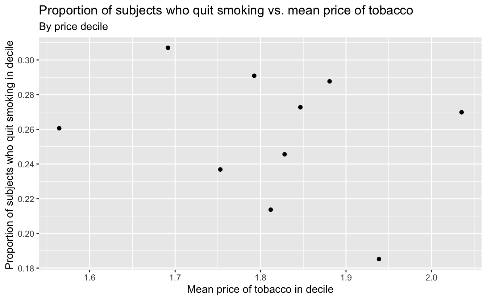

16 Instrumental variable estimation
# Packages
library(tidyverse)
# Parameters
# NHEFS data
file_nhefs <- here::here("data/nhefs.rds")
# Round and format vector
round_format <- function(x, nsmall = 2, ...) {
format(round(x, digits = nsmall), nsmall = nsmall, ...)
}
# Print tibble
kable <- function(x, cols = where(is.double), nsmall = 2, align = "r", ...) {
x %>%
mutate(across({{cols}}, round_format, nsmall = nsmall)) %>%
knitr::kable(align = align, ...) %>%
kableExtra::kable_styling(full_width = FALSE, position = "left")
}
#===============================================================================
# NHEFS data with qsmk as a double
nhefs <-
read_rds(file_nhefs) %>%
mutate(qsmk = as.double(qsmk) - 1)
# NHEFS censored to remove missing weight and price measurements in 1982
nhefs_censored <-
nhefs %>%
drop_na(wt82, wt82_71, price82)16.1 The three instrumental conditions
In the following, we will consider price82 as an instrumental variable:
price82: Average tobacco price in state of residence in 1982 ($USD 2008)
Range of tobacco prices.
summary(nhefs_censored$price82)#> Min. 1st Qu. Median Mean 3rd Qu. Max.
#> 1.452 1.740 1.815 1.806 1.868 2.103The prices ranged from $1.45 to $2.10 with an average of around $1.81.
Distribution of tobacco prices.
nhefs_censored %>%
ggplot(aes(price82)) +
geom_histogram(binwidth = 0.05, boundary = 0) +
geom_vline(xintercept = mean(nhefs_censored$price82), color = "red") +
scale_x_continuous(breaks = scales::breaks_width(0.1)) +
labs(
title = "Distribution of tobacco prices",
subtitle = "Red line indicates mean price",
x = "Price of tobacco",
y = "Count"
)
Proportion of subjects who quit smoking vs. mean price of tobacco.
v <-
nhefs_censored %>%
arrange(price82, seqn) %>%
mutate(decile = cut_number(price82, n = 10)) %>%
group_by(decile) %>%
summarize(across(c(price82, qsmk), mean))
v %>%
ggplot(aes(price82, qsmk)) +
geom_point() +
scale_y_continuous(breaks = scales::breaks_width(0.02)) +
labs(
title = "Proportion of subjects who quit smoking vs. mean price of tobacco",
subtitle = "By price decile",
x = "Mean price of tobacco in decile",
y = "Proportion of subjects who quit smoking in decile "
)
By price decile, there is a very week association, if any, of the mean price of tobacco and the proportion of subjects who quit smoking.
Add variable highprice to indicate that price82 is greater that 1.5.
nhefs_censored <-
nhefs_censored %>%
mutate(
highprice =
case_when(
price82 <= 1.5 ~ 0,
price82 > 1.5 ~ 1,
TRUE ~ NA_real_
) %>%
as.factor()
)Percentage of those who quit smoking by price group.
v <-
nhefs_censored %>%
group_by(highprice) %>%
summarize(qsmk_pct = 100 * mean(qsmk))
kable(v, nsmall = 1)| highprice | qsmk_pct |
|---|---|
| 0 | 19.5 |
| 1 | 25.8 |
25.8% of those in the highprice = 1 group quit smoking, and 19.5% of those in the highprice = 0 group quit smoking. The risk difference is therefore 6.3%.
16.2 The usual IV estimand
Mean values of weight gain (wt82_71) and whether subject quit smoking (qsmk) by price group.
v <-
nhefs_censored %>%
group_by(highprice) %>%
summarize(across(c(wt82_71, qsmk), mean))
kable(v, nsmall = 4)| highprice | wt82_71 | qsmk |
|---|---|---|
| 0 | 2.5357 | 0.1951 |
| 1 | 2.6860 | 0.2578 |
The differences in the means.
v <-
v %>%
summarize(
wt82_71_diff = wt82_71[highprice == "1"] - wt82_71[highprice == "0"],
qsmk_diff = qsmk[highprice == "1"] - qsmk[highprice == "0"]
)
kable(v, nsmall = 4)| wt82_71_diff | qsmk_diff |
|---|---|
| 0.1503 | 0.0627 |
Estimate of ATE.
v %>%
summarize(estimate = wt82_71_diff / qsmk_diff) %>%
kable(nsmall = 1)| estimate |
|---|
| 2.4 |
Equivalent estimate of ATE calculated using two saturated linear models.
tibble(
estimate =
coef(lm(wt82_71 ~ highprice, data = nhefs_censored))["highprice1"] /
coef(lm(qsmk ~ highprice, data = nhefs_censored))["highprice1"]
) %>%
kable(nsmall = 1)| estimate |
|---|
| 2.4 |
Fit two-stage least-squares regression.
fit <- ivreg::ivreg(wt82_71 ~ qsmk | highprice, data = nhefs_censored)
summary(fit)#>
#> Call:
#> ivreg::ivreg(formula = wt82_71 ~ qsmk | highprice, data = nhefs_censored)
#>
#> Residuals:
#> Min 1Q Median 3Q Max
#> -43.34863 -4.00206 -0.02712 4.17040 46.47022
#>
#> Coefficients:
#> Estimate Std. Error t value Pr(>|t|)
#> (Intercept) 2.068 5.085 0.407 0.684
#> qsmk 2.396 19.840 0.121 0.904
#>
#> Diagnostic tests:
#> df1 df2 statistic p-value
#> Weak instruments 1 1474 0.822 0.365
#> Wu-Hausman 1 1473 0.000 0.989
#> Sargan 0 NA NA NA
#>
#> Residual standard error: 7.856 on 1474 degrees of freedom
#> Multiple R-Squared: 0.02129, Adjusted R-squared: 0.02062
#> Wald test: 0.01459 on 1 and 1474 DF, p-value: 0.9039Here’s how to interpret the diagnostic tests:
Weak instruments: A good instrumental variable is highly correlated with endogenous predictor variables and uncorrelated with the errors. This would be indicated with a high value for the statistic and a low p-value. Thus,
highpricedoes not appear to be a good instrumental value.Wu-Hausman: Ordinary least squares can be inconsistent when predictor variables are correlated with the errors. This would be indicated with a high value for the statistic and a low p-value. This does not appear to be the case.
The F-statistic for the first-stage model is less than 10.
lm(qsmk ~ highprice, data = nhefs_censored) %>%
broom::glance() %>%
select(f_statistic = statistic) %>%
kable(nsmall = 1)| f_statistic |
|---|
| 0.8 |
Estimate of ATE with 95% confidence interval.
broom::tidy(fit, conf.int = TRUE) %>%
filter(term == "qsmk") %>%
select(estimate, conf_low = conf.low, conf_high = conf.high) %>%
kable(nsmall = 1)| estimate | conf_low | conf_high |
|---|---|---|
| 2.4 | -36.5 | 41.3 |
The confidence interval is very large.
We will now estimate the ATE using g-estimation.
For potential counterfactual (psi), calculate logistic regression coefficient (alpha) and its p-value (p_value).
g_est <- function(psi) {
geepack::geeglm(
highprice ~ h,
family = binomial(),
data =
nhefs_censored %>%
mutate(
highprice = as.double(highprice) - 1,
h = wt82_71 - psi * qsmk
),
id = seqn
) %>%
broom::tidy() %>%
filter(term == "h") %>%
transmute(psi, alpha = estimate, p_value = p.value)
}To estimate the ATE, use optimization to search for the value of psi with alpha value closest to 0.
f <- function(psi) {
abs(g_est(psi)$alpha)
}
v <- optimize(f, interval = c(-50, 50))
estimate <- v$minimum
tibble(estimate, `abs(alpha)` = v$objective) %>%
kable(nsmall = 3)| estimate | abs(alpha) |
|---|---|
| 2.396 | 0.000 |
Thus the estimate of the ATE is consistent with the value above.
tibble(estimate) %>%
kable(nsmall = 1)| estimate |
|---|
| 2.4 |
The method of section 14.6 to find a confidence interval for the ATE does not work in this case, due to the inability of reducing the p-value to below 0.05.
16.5 The three instrumental conditions revisited
Use two-stage least-squares regression to calculate ATE with 95% confidence interval with highprice defined using price.
ate <- function(price) {
ivreg::ivreg(
wt82_71 ~ qsmk | highprice,
data =
nhefs_censored %>%
mutate(
highprice =
case_when(
price82 <= price ~ 0,
price82 > price ~ 1,
TRUE ~ NA_real_
) %>%
as.factor()
)
) %>%
broom::tidy(conf.int = TRUE) %>%
filter(term == "qsmk") %>%
select(estimate, conf_low = conf.low, conf_high = conf.high) %>%
add_column(price, .before = "estimate")
}Estimates of ATEs with 95% confidence intervals for different prices.
seq(1.6, 1.9, 0.1) %>%
map_dfr(ate) %>%
mutate(price = str_c("$", round_format(price, nsmall = 2))) %>%
kable(nsmall = 1)| price | estimate | conf_low | conf_high |
|---|---|---|---|
| $1.60 | 41.3 | -282.3 | 364.8 |
| $1.70 | -40.9 | -409.2 | 327.4 |
| $1.80 | -21.1 | -76.9 | 34.7 |
| $1.90 | -12.8 | -59.2 | 33.6 |
The estimates, in kilograms, are too large to be plausible, and the confidence intervals are very large.
Fit two-stage least-squares regression using variables and model from section 15.1. We will assume that qsmk is the only endogenous predictor variable.
fit <-
ivreg::ivreg(
wt82_71 ~ sex + poly(age, 2) + race + education + poly(wt71, 2) +
poly(smokeintensity, 2) + poly(smokeyrs, 2) + active + exercise |
qsmk | highprice,
data = nhefs_censored
)
summary(fit)#>
#> Call:
#> ivreg::ivreg(formula = wt82_71 ~ sex + poly(age, 2) + race +
#> education + poly(wt71, 2) + poly(smokeintensity, 2) + poly(smokeyrs,
#> 2) + active + exercise | qsmk | highprice, data = nhefs_censored)
#>
#> Residuals:
#> Min 1Q Median 3Q Max
#> -43.7423 -4.5482 -0.4517 3.8464 47.2542
#>
#> Coefficients:
#> Estimate Std. Error t value Pr(>|t|)
#> (Intercept) 3.99398 7.80159 0.512 0.6088
#> qsmk -3.13250 32.63876 -0.096 0.9236
#> sex1 -1.97116 2.75323 -0.716 0.4741
#> poly(age, 2)1 -59.34351 112.31649 -0.528 0.5973
#> poly(age, 2)2 -43.08971 26.53034 -1.624 0.1046
#> race1 -0.47187 5.03253 -0.094 0.9253
#> education2 0.60686 0.71879 0.844 0.3986
#> education3 0.60944 0.94965 0.642 0.5211
#> education4 1.62590 1.06644 1.525 0.1276
#> education5 0.46648 3.45391 0.135 0.8926
#> poly(wt71, 2)1 -59.62715 21.53747 -2.769 0.0057 **
#> poly(wt71, 2)2 -9.39097 16.78443 -0.560 0.5759
#> poly(smokeintensity, 2)1 -6.35880 69.69741 -0.091 0.9273
#> poly(smokeintensity, 2)2 -0.02664 52.68866 -0.001 0.9996
#> poly(smokeyrs, 2)1 0.03413 65.54988 0.001 0.9996
#> poly(smokeyrs, 2)2 -0.80088 33.44159 -0.024 0.9809
#> active1 -0.97707 0.48369 -2.020 0.0436 *
#> active2 -0.20673 1.20222 -0.172 0.8635
#> exercise1 0.53695 2.28816 0.235 0.8145
#> exercise2 0.63151 2.39327 0.264 0.7919
#>
#> Diagnostic tests:
#> df1 df2 statistic p-value
#> Weak instruments 1 1456 0.327 0.568
#> Wu-Hausman 1 1455 0.048 0.826
#> Sargan 0 NA NA NA
#>
#> Residual standard error: 7.913 on 1456 degrees of freedom
#> Multiple R-Squared: 0.01914, Adjusted R-squared: 0.006341
#> Wald test: 8.562 on 19 and 1456 DF, p-value: < 2.2e-16The weak instruments diagnostic test again indicates that highprice does not appear to be a good instrumental value.
Estimate of ATE with 95% confidence interval.
broom::tidy(fit, conf.int = TRUE) %>%
filter(term == "qsmk") %>%
select(estimate, conf_low = conf.low, conf_high = conf.high) %>%
kable(nsmall = 1)| estimate | conf_low | conf_high |
|---|---|---|
| -3.1 | -67.2 | 60.9 |
The confidence interval is even larger than with the earlier two-stage least-squares regression.